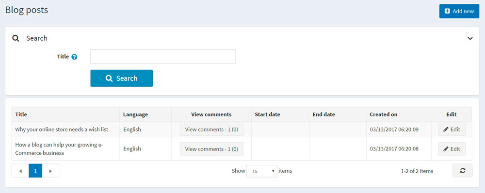
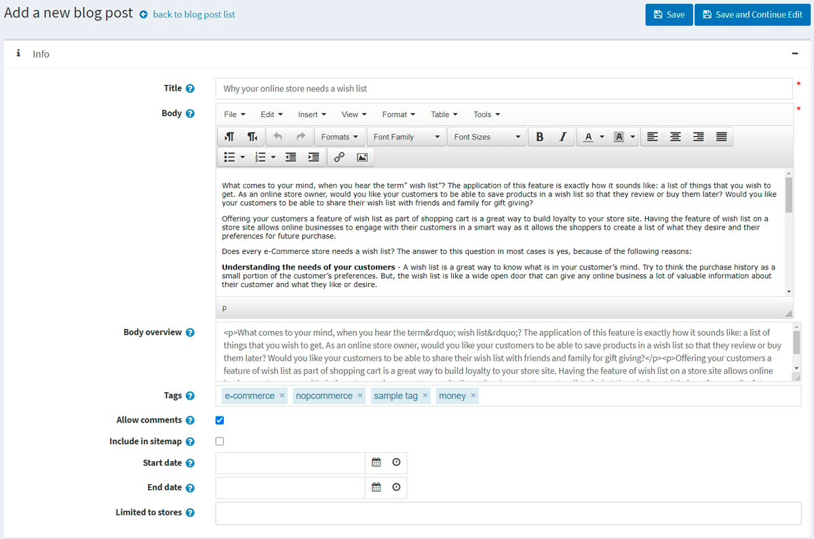
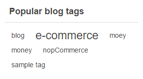
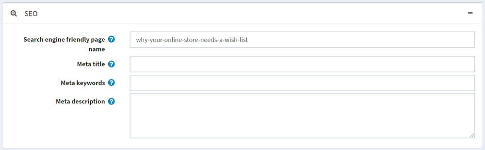
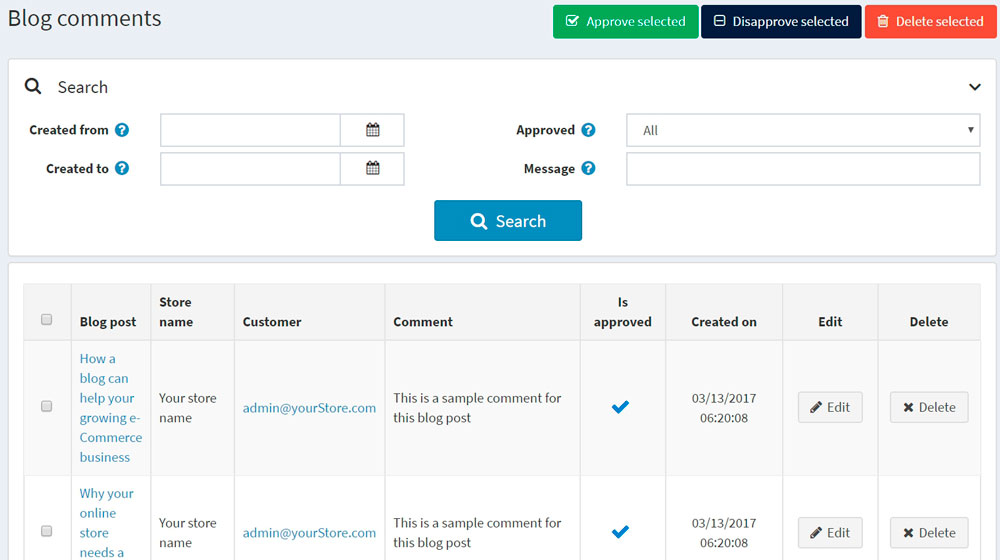
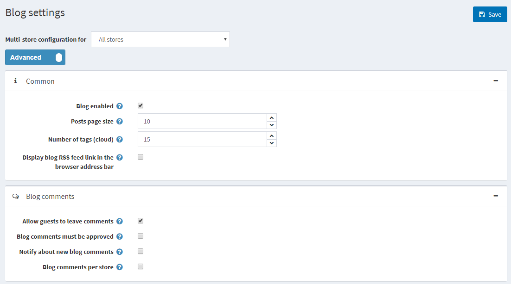

部落格
部落格是與現有顧客建立連結的絕佳方式，不僅能讓他們隨時掌握最新的商品資訊或提供教育內容，還能協助開發新顧客。
若要管理部落格文章，請前往 內容管理 → 部落格文章。

新增部落格文章
點擊 新增 並填寫關於新部落格文章的資訊。

資訊
在「資訊」面板中，定義以下部落格文章詳細資料：
若啟用了一種以上的語言，請從 語言 下拉式清單中選擇此部落格文章的語言。顧客只會看到他們所選語言的部落格文章。
輸入此部落格文章的 標題。
輸入此部落格文章的 內文。
您可以指定 內文概覽，若您只想讓部分文字顯示在列出所有部落格文章的主部落格頁面上。
輸入要在前台商店部落格頁面上顯示的 標籤。標籤是可以用來識別此部落格文章的關鍵字。請輸入與此部落格文章相關的標籤清單，並以逗號分隔。與特定標籤關聯的部落格文章越多，該標籤在部落格頁面側邊欄「熱門標籤」區域中顯示的字體就會越大。

勾選 允許評論 核取方塊，以允許顧客對此部落格文章發表評論。
勾選 包含在網站地圖中 核取方塊，將此部落格文章包含在網站地圖中。
輸入顯示此部落格文章的 開始日期 和 結束日期（以世界協調時間 UTC 為準）。
Note
若您不想定義部落格文章的開始和結束日期，可以將這些欄位留空。
- 在 限制商店 欄位中選擇商店，僅讓特定商店啟用此部落格文章。若不需要此功能，請將該欄位留空。
Note
若要使用此功能，您必須停用以下設定：目錄設定 → 忽略「依商店限制」規則 (全站)。閱讀更多關於多商店功能的資訊 here。
在編輯現有的部落格文章時，或點擊新文章的 儲存並繼續編輯 按鈕後，您可以點擊右上角的 預覽 按鈕，查看該部落格文章在網站上的呈現方式。
SEO
在 SEO 面板中，請定義以下部落格文章的詳細資訊：

- 定義 搜尋引擎友善頁面名稱 (Search engine friendly page name)。例如，輸入 "the-best-news" 即可讓您的 URL 變成
http://yourStore.com/the-best-news。若將此欄位留空，系統將會根據部落格文章標題自動產生。 - 在 Meta title 欄位中覆寫頁面標題（預設標題為部落格文章的標題）。
- 輸入 Meta keywords 以將其加入部落格文章的標頭中。它們代表頁面上最重要主題的簡明清單。
- 輸入 Meta description 以將其加入部落格文章的標頭中。Meta description 標籤是頁面內容的簡要總結。
管理部落格留言
若要管理部落格留言，請選擇 內容管理 → 部落格留言。

使用 核准所選項目 按鈕來核准所選的留言，並使用 取消核准所選項目 來取消核准留言。 您也可以編輯或刪除部落格留言。若留言被刪除，該留言將會從系統中移除。
部落格設定
您可以在 設定 → 設定 → 部落格設定 中管理部落格設定。此頁面提供兩種模式：進階 與 基本。
此頁面支援多商店設定；這意味著可以針對所有商店定義相同的設定，或為不同商店設定不同的值。如果您想要管理特定商店的設定，請從多商店設定下拉式清單中選擇該商店名稱，並勾選左側所需的核取方塊，以設定其自訂數值。如需進一步詳細資訊，請參閱 多商店。

Common
定義下列 Common 設定：
- 勾選 Blog enabled 核取方塊以啟用商店中的部落格功能。
- 在 Posts page size 欄位中，設定每頁顯示的貼文數量。
- 在 Number of tags (cloud) 欄位中，輸入標籤雲中要顯示的標籤數量。
- 勾選 Display blog RSS feed link in the browser address bar 核取方塊，以在瀏覽器網址列顯示部落格 RSS 訂閱連結。
部落格留言
定義下列的 部落格留言 設定：
- 勾選 允許訪客發表留言 核取方塊，以啟用未註冊的使用者在部落格新增留言。
- 若部落格留言必須經由管理員核准，請勾選 部落格留言必須經過核准 核取方塊。
- 勾選 通知新部落格留言 核取方塊，以便在有新的部落格留言時通知商店擁有者。
- 勾選 依商店顯示部落格留言 核取方塊，僅顯示目前商店所撰寫的部落格留言。
點擊 儲存。
Note
為了安全起見，您可以為部落格留言啟用 CAPTCHA。欲了解更多資訊，請前往 CAPTCHA 章節。